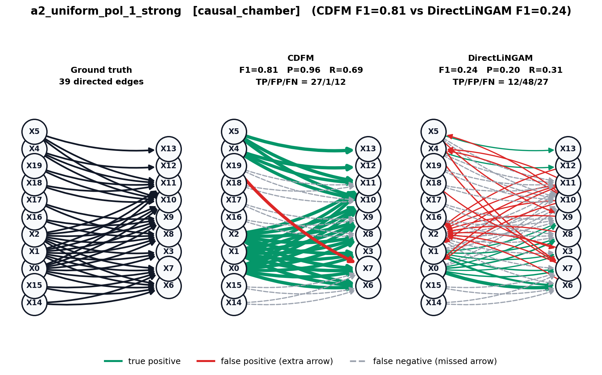
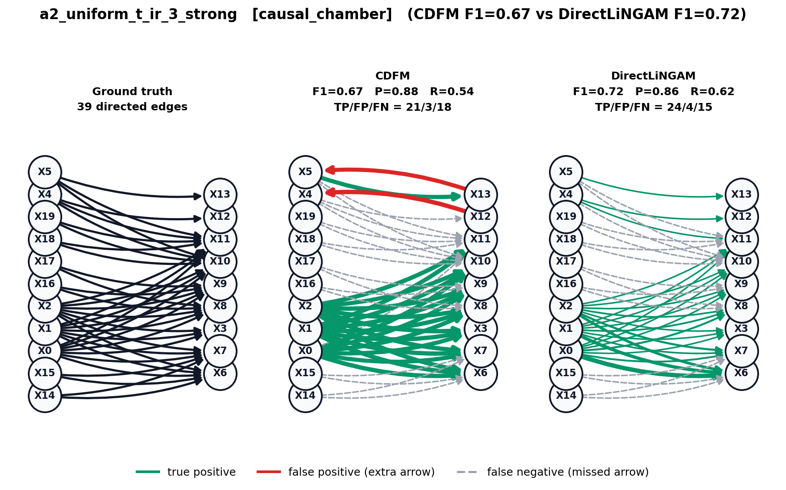
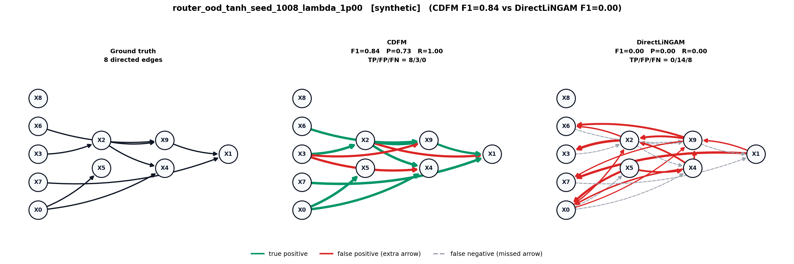
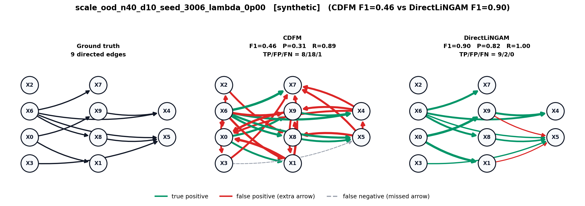
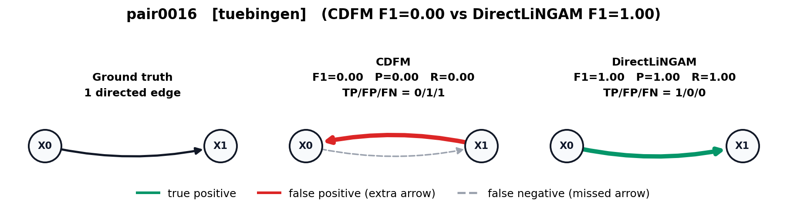
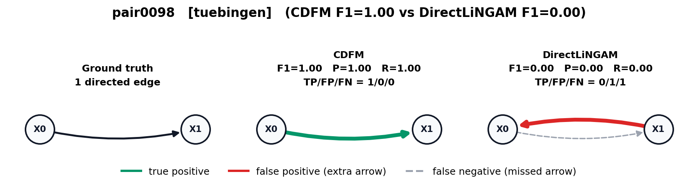

Gate-1 causal graph gallery (6 figures)

causal_chamber/a2_uniform_pol_1_strong_diff

causal_chamber/a2_uniform_t_ir_3_strong_diff

synthetic/router_ood_tanh_seed_1008_lambda_1p00_diff

synthetic/scale_ood_n40_d10_seed_3006_lambda_0p00_diff

tuebingen/pair0016_diff

tuebingen/pair0098_diff